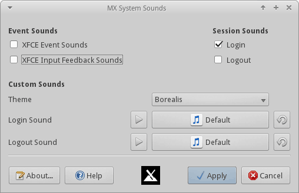

MX Sons système comporte trois zone principales.
1. Sons des événements XFCE
Ces paramètres correspondent aux paramètres des sons des événements qui se trouvent dans Apparence > Paramètres. Ces préférences peuvent être ajustées dans Apparence ou dans MX Sons système.
2. Sons de session
Ce sont des paramètres propres à MX. Ils contrôlent les sons des événements à la connexion et à la déconnexion. Ceux-ci sont définis indépendamment des Sons des événements principaux.
Il n’est pas nécessaire d’activer les Sons des événements pour activer un son de connexion ou de déconnexion.
3. Sons personnalisés
Cette partie permet la personnalisation des paramètres des sons du thème, ainsi que des sons de connexion et de déconnexion, au besoin.
Le son actuellement sélectionné peut être joué à l’aide du bouton “lecture” qui se trouve à gauche de la case de choix du son.
Le thème par défaut (si défini) peut être choisi avec le bouton à droite de la case de sélection. Notez que les thèmes ne possèdent pas tous de sons de connexion ou de déconnexion.
Dépannage
Historique de développement: Dolphin_Oracle
Licence : ici.
v. fr. 20170614